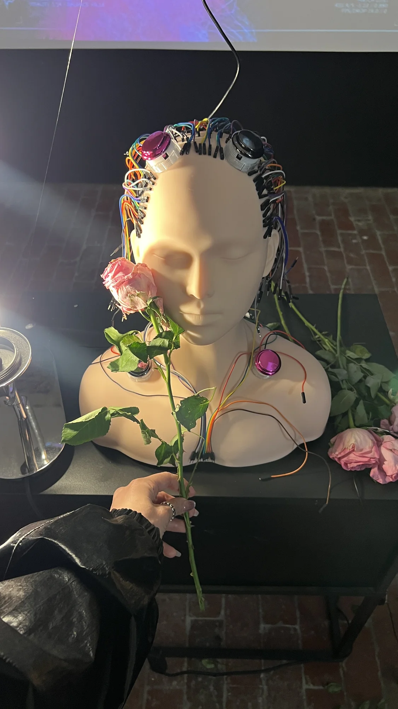
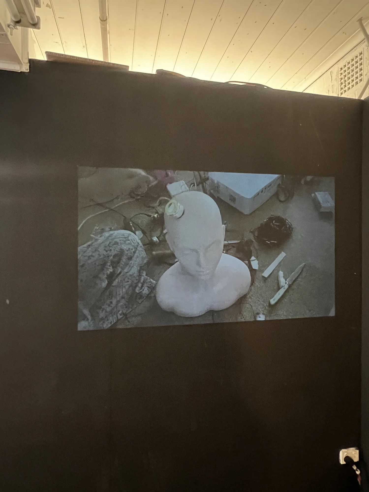
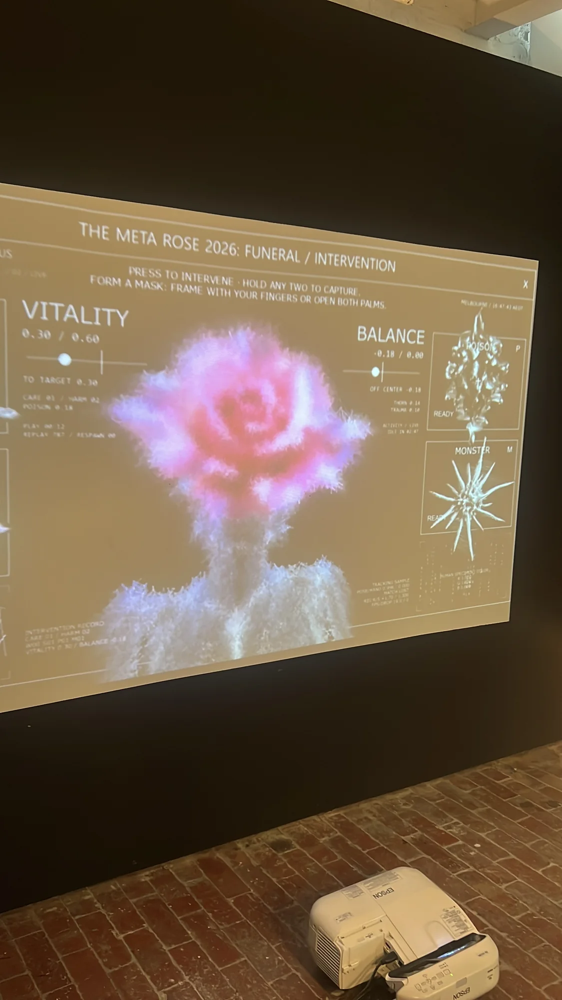
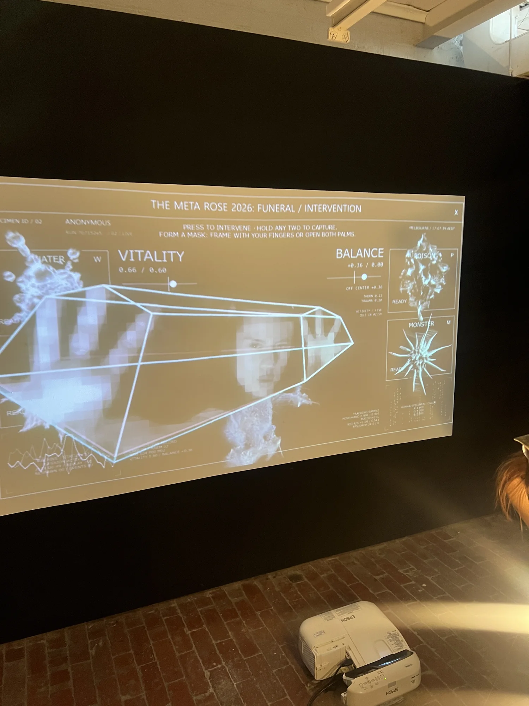
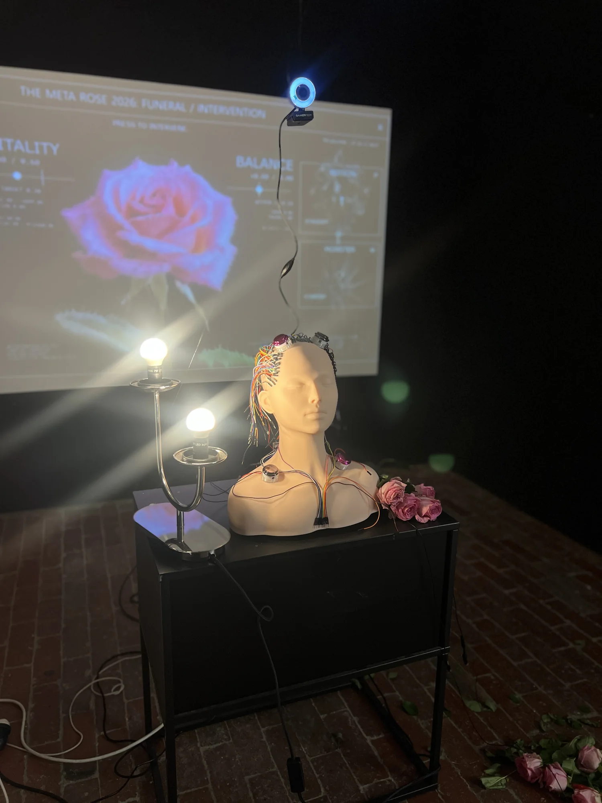
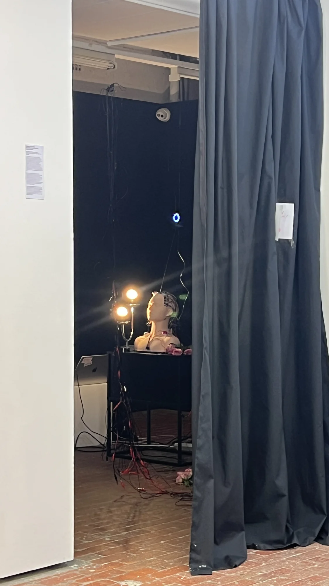
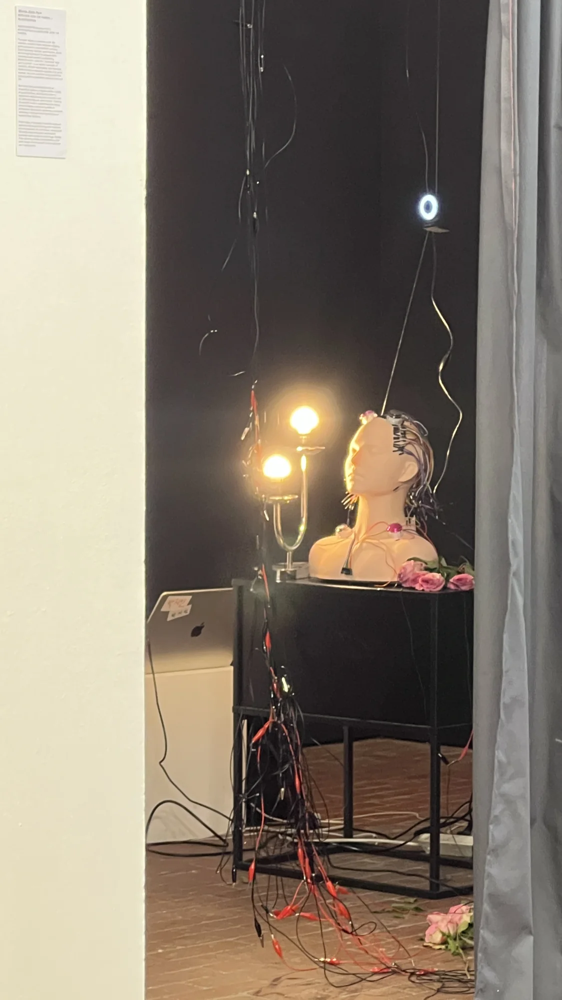
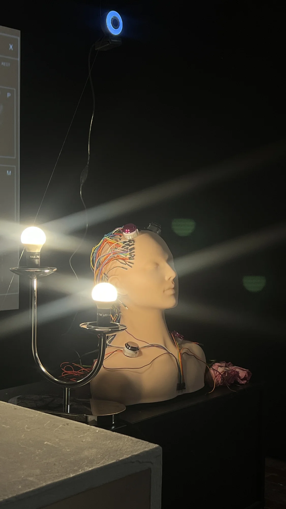

RE:INTERVENTION
LUCKY777 / Platform Presents
작품 소장 문의
관심 작품과 설치하려는 공간을 알려주세요.
- 이메일
- minniepark.studio@gmail.com
- 제목
- Artwork acquisition enquiry, RE:INTERVENTION
주소를 복사해 사용하는 이메일 서비스에서 작성해도 됩니다.

반응형 디지털 신체 안에 돌봄과 훼손을 함께 놓는 참여형 시스템입니다. The Funeral의 개입에서 발전한 작업으로, LUCKY777에서 제작 과정 영상과 기록을 함께 선보였습니다.
개입에서 RE:INTERVENTION으로
RE:INTERVENTION은 Meta Rose: The Funeral의 개입에서 발전한 별도 발표입니다. 2026년 10월 10일과 11일 Abbotsford Convent에서 Platform Presents가 선보인 LUCKY777 그룹전에 전시했습니다. 이 전시에서는 인터랙티브 작품 RE:INTERVENTION을 중심에 두고, 비하인드 더 신 영상과 독립된 무빙이미지 작품인 기록도 함께 상영했습니다.
작업은 받아들여질 만한 모습을 유지하려 하면서 밀어내는 자신의 여러 면에서 출발합니다. 바니타스에서 출발한 장미는 아름다움 안에 시듦을 품고, 해골에는 한때 살아 있던 신체의 시간이 남습니다. 이들은 같은 몸의 두 얼굴입니다. 원하지 않는 면을 없애고 긍정적인 자아의 승리를 선언하기보다, 돌봄과 훼손, 상처와 돌아옴을 함께 드러냅니다. 관객은 남아 있는 존재와 맺는 관계를 다시 선택할 수 있습니다.

참여와 반응형 신체
관객은 물리 버튼으로 반응형 디지털 신체의 균형과 생명력을 바꿉니다. 이마에 설치한 웹캠과 몸 트래킹은 행동하는 사람과 변화하는 이미지를 연결합니다. 엄지와 검지로 사각형을 만들면 카메라 마스크가 나타나고, 다섯 손가락을 펼치면 선택한 색과 선택적으로 적은 장미 이름을 지닌 다른 마스크가 나타납니다. 참여자는 시스템에 영향을 주는 행위자인 동시에 자신이 선택한 결과를 지켜보는 사람이 됩니다.
Rose Human Interface의 아무 버튼 두 개를 5초 동안 누르면 캡처를 요청할 수 있습니다. 돌봄과 훼손은 정답이 있는 순서로 정리되지 않습니다. 한 균형을 지키려는 행동이 다른 균형을 흔들 수 있고, 파괴 뒤에 생명이 돌아오기도 합니다. 캡처는 그 관계 속에서 선택한 한순간을 남깁니다. 관객의 감정을 진단하기보다 작품 안에서의 행동을 기록합니다.
선택형 Phone Hub는 본명 대신 무작위 장미 번호를 사용해 선택한 색과 선택적으로 적은 이름, 요청한 캡처를 돌려줍니다. 실시간 카메라 처리와 관객의 요청 후 이미지를 저장하는 일은 구분합니다. 바라보거나 캡처를 하지 않고, 잠시 쉬거나 떠나는 선택도 가능합니다. 연결된 폰 허브 아카이브는 전시 당시의 인터페이스와 예시를 보는 읽기 전용 기록이며 설치 연결, 새 촬영이나 관객 응답 수집은 하지 않습니다.

기록과 제작 과정
기록은 설치를 만드는 노동을 다루는 별도의 무성 루프 작품입니다. 손과 전선의 연결부, 만들어진 형상, 실패한 테스트와 반복된 연결을 드러냅니다. 매끄럽게 반응하는 표면 뒤로 사라지기 쉬운 기계의 물질적 신체와 그것을 만드는 시간을 남깁니다.
반드시 먼저 보아야 할 장면이나 마지막 장면은 없으며 개인 캡처도 만들지 않습니다. 관객은 어느 순간이든 들어오거나 떠날 수 있고, 영상은 그 행동이나 RE:INTERVENTION의 결과를 해석하지 않습니다. 기록은 LUCKY777에서 함께 상영한 제작 과정 영상과 구별되는 독립된 작품입니다.
작품 기술 정보
LUCKY777 / 2026년 10월
- 매체
- 무빙이미지 작업과 함께 선보인 인터랙티브 오디오비주얼 설치.
- 재료
- 생장미, 물리 버튼 인터페이스, 카메라, 반응형 디지털 신체, 사운드와 무빙이미지.
- 설치 크기
- 장소와 설치 구성에 따라 가변.
- 제작 도구
- TouchDesigner, 몸과 얼굴 트래킹, 물리 입력과 참여자가 요청하는 스크린샷 인터랙션.
- 작가 / 제작
- Minnie Park, 작품 및 제작.
주요 기록
Visual Index →





작품 소장 문의 →
관심 작품과 설치하려는 공간을 알려주세요.
- 이메일
- minniepark.studio@gmail.com
- 제목
- Artwork acquisition enquiry, RE:INTERVENTION
주소를 복사해 사용하는 이메일 서비스에서 작성해도 됩니다.